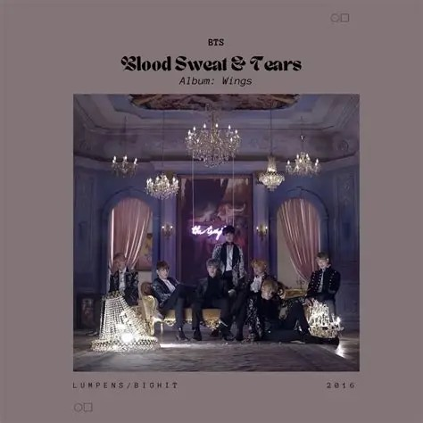
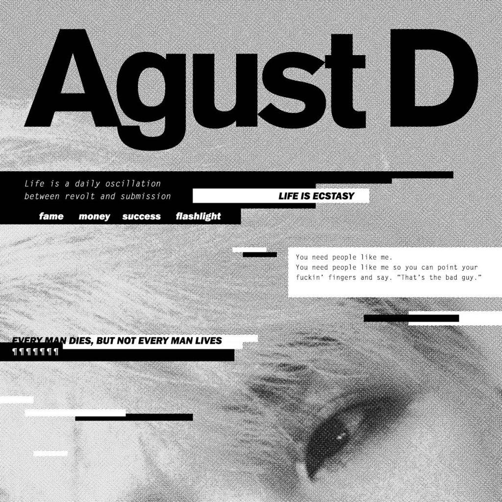
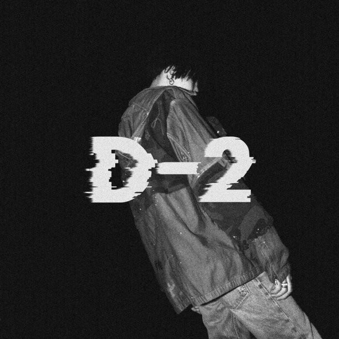
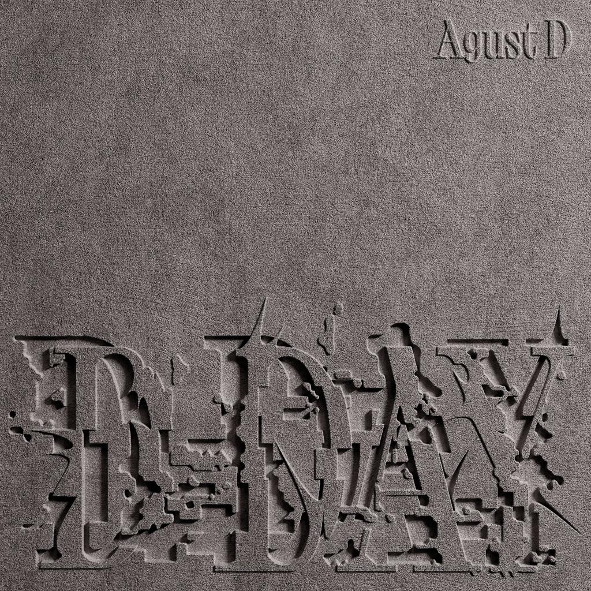
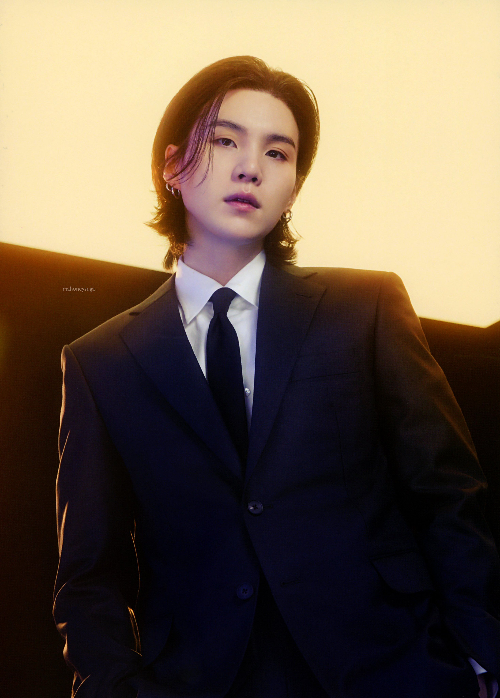

Introduction
Min Yoongi, also known by his stage name Suga, is a South Korean rapper, songwriter, record producer and a member of BTS. Born on March 9, 1993, Yoongi is known for his introspective lyrics and versatile musical style, he has made significant contributions to the group's song writing, production and overall success and has also pursued solo projects under the name Agust D. He began composing and arranging music, rapping, and performing. Before being signed under Big Hit Entertainment, he was active under the name Gloss as an underground rapper. As part of the hip hop crew D-Town in 2010, he produced "518-062", a song commemorating the Gwangju Uprising.
Yoongi's journey in the music industry began when he was discovered by Big Hit Entertainment, he originally intended to join the company as an in-house composer and music producer instead of a K-pop idol. But he eventually auditioned and was selected to become a trainee, officially debuting as a member of BTS in 2013, and has since then become known for his deep voice, smooth flow and emotional delivery. Also being known for his aloof behaviour, which fans admire as a part of his charm. His solo work under the name Agust D has also received critical acclaim, showcasing his versatility as an artist and he has been recognized to have the 'Hands of Midas' because all projects he has been involved in have been successful and are certain to have the same results for future projects.
Early Life & Musical Beginnings
Min Yoongi was born on March 9, 1993, in Daegu, South Korea. His interest in music developed at a young age, influenced by Korean hip-hop artists such as Stony Skunk and Epik High. These early influences introduced him to hip-hop and helped shape his interest in rap, songwriting and music production.
By the age of 13, Yoongi had already begun experimenting with MIDI equipment and learning how to produce beats. His musical interests extended beyond performing, and he developed an appreciation for the technical and creative aspects of making music.
His early influences included both traditional boom-bap hip-hop and more melodic, storytelling-oriented rap, elements that would eventually become recognizable characteristics of his musical style.
The Underground Years
Before entering the K-pop industry, Yoongi was active in Daegu's underground hip-hop scene. Performing under the name Gloss, he became involved with the hip-hop crew D-Town, where he wrote, recorded and produced music alongside other underground artists. One of his notable early productions was 518-062, a politically conscious track commemorating the Gwangju Uprising. The song demonstrated his interest in addressing social and historical issues through music, an approach that would continue throughout his career.
His underground experience provided him with an early foundation in songwriting, rap performance and production, allowing him to develop his musical identity before joining Big Hit Entertainment as a trainee and eventually debuting as a memer of BTS.
Timeline & Evolution
- Early teens: Begins experimenting with music production and MIDI equipment
- Teenage years: Becomes involved in Daegu's underground hip-hop scene
- Underground era: Performs as Gloss and joins D-Town
- 2010: Produces 518-062, commemorating the Gwangju Uprising
- 2010: Joins Big Hit Entertainment
Song Highlight: 518-062
518-062 is a pre-debut song produced by BTS’s Suga, then known as Gloss, for Daegu hip-hop crew D-TOWN, with its leader Naksyeon providing the rap. Created in May 2010 for a Gwangju music festival, the song commemorates the Gwangju Uprising (May 18–27, 1980), when civilians and students protesting authoritarian rule, martial law, and demanding democracy were brutally suppressed by the military. Hundreds of citizens were killed, tortured, or went missing, making the uprising a lasting symbol of South Korea’s struggle for democracy and human rights. The title combines “5.18,” the date of the uprising, and “062,” Gwangju’s area code, symbolically turning the numbers into a postal code carrying a message of remembrance. Yoongi explained that he created the song to revive memories of the increasingly forgotten pro-democracy movement and remind people never to forget its victims. Although the song was rejected in the festival’s preliminary round, he later uploaded it online himself, sharing its message with the public.
The Road to BTS
Yoongi entered Big Hit Entertainment in 2010 after participating in the company's Hit It rap competition. His original ambition was to work as a music producer rather than become a performing idol. During his recruitment, he was reportedly assured that his role would primarily involve rap and music production, rather than extensive idol-style dancing. However, his eventual transition into BTS required him to develop performance skills alongside his existing musical abilities.
His trainee years were particularly difficult. While balancing training with financial responsibilities, Yoongi took on part-time work, including employment at a recording studio and delivering food on a motorbike. These experiences placed considerable physical and financial strain on him. During this period, he also sustained a shoulder injury following a motorbike accident, an experience that he later referenced in his solo music, particularly Amygdala. Despite these challenges, Yoongi continued training and contributing to BTS's developing musical identity.

Pre-debut Suga
Just because something is different from me doesn’t mean that it’s wrong. I think that equality begins with embracing our differences, instead of thinking of them in terms of right and wrong. -Min Yoongi
The Producer Behind BTS
Tomorrow
Is a song co-written and co-produced by Suga alongside other credited artists, that talks about personal struggles and introspection reflecting the struggles of young adults facing repetitive days, uncertainty, and fear of tomorrow.
Spring Day
This song, co-written and co-produced by Suga, is often understood as a poignant reflection on loss and the hope of reunion, with spring symbolizing healing and renewal.
Seesaw
Written by Suga, "Seesaw" explores the emotional struggles of relationships, using the metaphor of a seesaw to depict the ups and downs of love, reflecting the complexity of emotions through its lyrics.

Blood Sweat & Tears
Co-written by Suga, the song portrays complete surrender to temptation, where pleasure and pain are inseparable, representing the transition from youth to adulthood, showing how confronting desire and darkness is part of growing up.
The Artist Behind Agust D
While SUGA represents Yoongi's identity within BTS, Agust D provides a more personal and independent platform for his artistic expression.

Agust D (2016)
Released: August 2016
Agust D is the title track in the debut mixtape by the South Korean rapper Agust D, better known as Suga of BTS. Exploring his identity, ambition, anger, mental health struggles, and experiences in the music industry through raw, unapologetic lyrics and aggressive rap. It serves as a deeply personal introduction to his artistic identity outside BTS.

D-2 (2020)
Released: May 2020
Agust D's second mixtape, delving into self-reflection, emotional vulnerability, personal growth, and the complexities of fame and identity. Through introspective lyrics and diverse musical styles, it reveals a more mature perspective on his struggles, ambitions, and evolving understanding of himself completely.

D-Day (2023)
Released: April 2023
Agust D's debut solo studio album and the concluding chapter of his mixtape trilogy, exploring acceptance, perspective, emotional closure, and artistic evolution. Through introspective storytelling, SUGA reflects on his past, embraces change, and explores the importance of letting go and moving forward.
Across Agust D, D-2, and D-DAY, Agust D's artistry evolves from raw, unapologetic self-expression into a more reflective and mature exploration of life, demonstrating his ability to turn personal experiences into powerful musical storytelling.
Beyond Music

Yoongi's interests extend beyond music and performance. Despite frequently discussing the importance of pursuing individual interests rather than limiting oneself to academic achievement, he completed his studies at Global Cyber University, earning a degree in Broadcasting and Entertainment. He subsequently enrolled at Hanyang Cyber University, where he pursued a Master of Business Administration program in Advertising and Media alongside other BTS members.
During the COVID-19 pandemic, Yoongi also expressed interest in studying psychology, explaining that he wanted to better understand people and help those experiencing difficulties. His interest in psychology reflects a recurring theme in his music: an effort to understand human emotions, personal struggles and the experiences that shape people's lives.
Made with love for BTS and ARMY